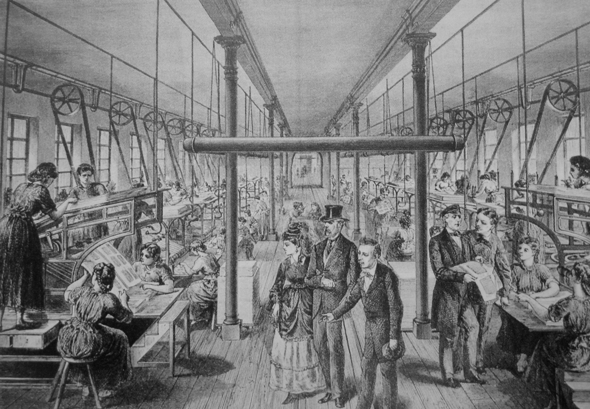

AI metaphors
In thinking about AI from an SWE perspective, two metaphors have stuck with me and affected how I think about it, and my expectations for the future.
The first is the electrification of factories. This is an interesting detail of history that I hadn't appreciated. Factories can use a lot of energy, and prior to electricity, many used big steam engines on-site to provide it. But unlike electrical motors, steam engines don't scale down very well. So the way to use steam power in a factory was to have one huge steam engine, which turns one huge axle - and then distribute the energy around the factory as motion, with belts and gears and so on:

Imagine how dangerous this was! But, interestingly, when moving to electricity, at first the only electrical motors available were also huge. And so a factory might keep the same design, simply swapping a large steam engine for a large electrical motor. While this was doubtless better in some respects, such a change didn't actually achieve most of the gains we see today from factory electrification.
Getting there required further improvement in motors to make small, individually powered tools possible; vastly more capital investment, to replace every belt-driven machine rather than just swap out the steam engine; and most of all, a fundamental rethink of how factories were laid out, recognizing which parts of the design were driven by facts that no longer held.
It seems like augmenting software engineering with AI is similar in many respects, and I'm sure many of the techniques and processes that feel like sensible standards today will no longer make sense once we've really understood how best to use our new tools.
The other metaphor, less abstract, is the development of compilers. Most early software was written using assembly language, offering basically no abstraction at all over the raw operation of the CPU. Over time, more programming moved to abstract, higher-level languages, which would be compiled into the assembly language previously written by hand. Assembly would only be written directly when performance was critical, or by especially skilled programmers.
Today pretty much nobody writes assembly directly if they're trying to be productive - so in a sense the act of programming has already been automated once, and we all just moved on to doing something more abstract without realizing it. It seems plausible AI could do the same thing, to the extent that someone doing software engineering in a decade will know as little about classes or variables as engineers today know about MOV or PUSH instructions.